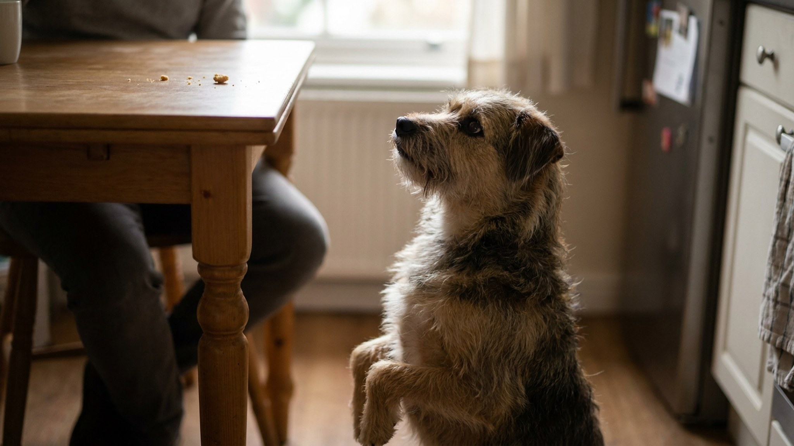

Один раз дал кусочек со стола — и жизнь изменилась. Теперь с каждым обедом собака у локтя, взгляд как у Басkerвилля, а иногда и лапа на колене. Это не упрямство и не вредность: это нормальный результат одного правила поведенческой психологии. И отучить — реально. Нужно четыре недели, последовательность и понимание механики.
🐾 Здоровье питомца под контролем
AI-ветеринар, дневник здоровья и персональные советы для вашего питомца — установите AnimaLife бесплатно.
Собаки учатся через оперантное обусловливание: поведение, которое приносит вознаграждение, повторяется. Если хотя бы один раз поведение «сижу у стола и смотрю с мольбой» привело к еде — собака запомнила эту связь. И теперь будет пробовать снова и снова.
Хуже того: прерывистое подкрепление — когда угощают иногда, не всегда — делает поведение особенно устойчивым. Это та же механика, что работает в игровых автоматах: именно непредсказуемость награды заставляет продолжать. Собака, которую угощали нерегулярно, будет клянчить дольше и настойчивее, чем та, которую угощали всегда.
Вывод: пока хотя бы один человек в семье даёт угощение со стола, поведение сохраняется. Это командная работа, не индивидуальная.
Наказание кажется логичным: собака делает нежелательное, вы показываете, что это плохо. Но в этом контексте наказание не работает по нескольким причинам.
Крики и шлепки не объясняют собаке, что делать вместо клянчения. Они объясняют только то, чего нельзя. Это половина обучения, и работает она плохо.
Прежде чем менять поведение за столом, нужна альтернатива. Альтернатива — коврик или лежанка (будем называть «место»), расположенная на расстоянии от стола.
На первой неделе обучаем «место» отдельно, не во время еды. Схема проста:
Теперь применяем «место» в реальных условиях. Перед тем как сесть за стол:
Важно: не отгоняйте собаку, если она всё же подойдёт. Просто молча встаньте, заведите обратно на место, дайте ещё угощение. Без слов, без эмоций. Повторяйте столько раз, сколько нужно. Каждое спокойное возвращение — шаг к цели.
К третьей неделе собака уже понимает: за столом — место. Теперь постепенно снижаем «цену» ожидания:
Четвёртая неделя — самая сложная, потому что в игру входят гости. Они, как правило, умиляются смотрящей собаке и угощают — и всё возвращается к началу.
🐾 Первая помощь — всегда под рукой
AnimaLife подскажет, что делать в тревожной ситуации с питомцем ещё до визита к врачу. Откройте в один тап.
🐾 Понравился разбор?
Подпишитесь на канал — каждый день разбираем по одному тревожному симптому у кошек и собак: что в пределах нормы, а когда пора к врачу. Подпишитесь, чтобы не пропустить разбор, который может спасти здоровье вашего питомца.
Дети — самое уязвимое звено в этой системе. Им тяжело устоять перед взглядом собаки. Несколько принципов, которые помогают объяснить детям:
Детям важно дать конкретную альтернативу: «хочешь угостить собаку — возьми из её пакетика лакомство и дай после обеда». Это переключает желание угостить в безопасное русло.
Если собака, которая раньше спокойно лежала во время еды, вдруг начала интенсивно клянчить — это изменение в поведении. Иногда за ним стоит усилившийся голод из-за изменения обмена веществ, изменение самочувствия или тревога. Если поведенческий протокол не даёт результата за 4 недели или ситуация резко изменилась — стоит упомянуть об этом на плановом осмотре.
Клянчение — обучаемое поведение. Это хорошая новость: то, что обучено, можно переучить. Четыре недели последовательной работы — и обеды снова будут спокойными.
Материал носит информационный характер и не заменяет очную консультацию ветеринара.